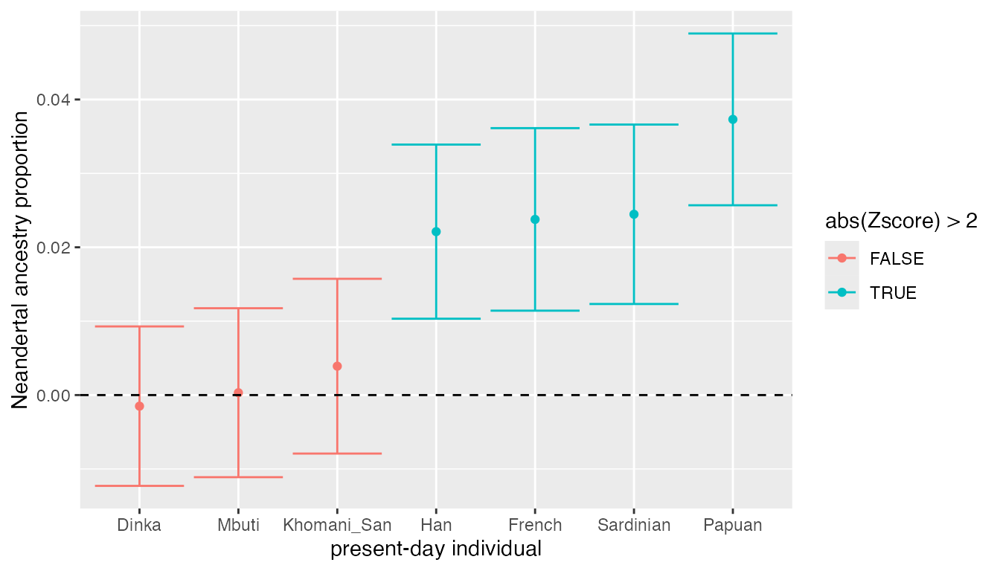

This vignette describes how to calculate various population admixture statistics (\(D\), \(f_4\), etc.) using the admixr package, and how to use it to do simple filtering and processing of EIGENSTRAT datasets.
A friendly warning: many of the statistics implemented here can be quite sensitive to assumptions about population histories or to errors in the data (causiing spurious correlations between similarly processed samples, especially in case of ancient DNA). If you want to use these methods, you should really understand the theory behind them first! I highly recommend reading Benjamin Peter’s wonderful overview of the subject and Nick Patterson’s original ADMIXTOOLS paper.
Introduction
ADMIXTOOLS is a widely used software package for calculating admixture statistics and testing population admixture hypotheses. However, although powerful and comprehensive, it is not exactly known for being user-friendly.
A typical ADMIXTOOLS workflow often involves a combination of sed/awk/shell scripting and manual editing to create different configuration files. These are then passed as command-line arguments to one of ADMIXTOOLS commands, and control how to run a particular analysis. The results are then redirected to another file, which has to be parsed by the user to extract values of interest, often using command-line utilities again or (worse) by manual copy-pasting. Finally, the processed results are analysed in R, Excel or another program.
This workflow is very cumbersome, especially if one wants to explore many hypotheses involving different combinations of populations. Most importantly, however, it makes it difficult to follow the rules of best practice for reproducible science, as it is nearly impossible to construct reproducible automated “pipelines”.
This R package makes it possible to perform all stages of an ADMIXTOOLS analysis entirely from R. It provides a set of convenient functions that completely remove the need for “low level” configuration of individual ADMIXTOOLS programs, allowing users to focus on the analysis itself.
Installation
Note that in order to use the admixr package, you need a working installation of ADMIXTOOLS! You can find installation instructions here.
Furthermore, you need to make sure that R can find ADMIXTOOLS binaries on the $PATH. If this is not the case, running library(admixr) will show a warning message with instructions on how to fix this.
To install admixr from GitHub you need to install the package devtools first. To do this, you can simply run (in R):
Furthermore, if you want to follow the examples in this vignette, you will need the tidyverse collection of packages for convenient data analysis, which you can install with:
When everything is ready, you can run the following code to make functions in both packages available:
library(admixr)
library(tidyverse)
#> ── Attaching packages ────────────────────────────────── tidyverse 1.2.1 ──
#> ✔ ggplot2 3.0.0 ✔ purrr 0.2.5
#> ✔ tibble 1.4.2 ✔ dplyr 0.7.6
#> ✔ tidyr 0.8.1 ✔ stringr 1.3.1
#> ✔ readr 1.1.1 ✔ forcats 0.3.0
#> ── Conflicts ───────────────────────────────────── tidyverse_conflicts() ──
#> ✖ dplyr::filter() masks stats::filter()
#> ✖ dplyr::lag() masks stats::lag()A note about EIGENSTRAT format
ADMIXTOOLS software uses a peculiar set of genetic file formats, which may seem strange if you are used to working with VCF files. However, the basic idea remains the same - we want to store and access SNP data (REF/ALT alleles) of a set of individuals at a defined set of genomic positions.
EIGENSTRAT datasets always contain three kinds of files:
-
indfile - specifies the name, sex and population assignment of each sample -
snpfile - specifies the positions of SNPs, REF/ALT alleles etc. -
genofile - contains SNP data (one row per site, one columne per sample) in a dense string-based format:- 0: individual is homozygous ALT
- 1: individual is a heterozygote
- 2: individual is homozygous REF
- 9: missing data
As you can see, a VCF file is essentially a combination of all three files in a single file. Luckily for us, all three EIGENSTRAT files usually share a common path and prefix (at least you should try to make it so whenever you work with them). This allows us to work with just the prefix instead of worrying about individual files for every analysis.
As such, all main admixr functions accept a prefix argument, which specifies the path and prefix of all three EIGENSTRAT files (you can still work with individual files if you need to - using ind, snp and geno arguments of each admixr function - but try to avoid that because it makes your code mode verbose).
Let’s first download a small testing SNP dataset using a built-in admixr function. We will be using this dataset in the rest of this vignette. For our convenience, the function returns a prefix of the whole dataset for future reference. (The function downloads the data into a temporary directory, feel free to change the final destination using it’s dirname parameter).
(eigenstrat_prefix <- download_data(dirname = tempdir()))
#> [1] "/var/folders/kk/s4cwdkx90pscz314mp0hhz480000gn/T//Rtmpo5bR7i/snps/snps"We can verify that there are three files with this prefix:
dir(path = dirname(eigenstrat_prefix), full.names = TRUE)
#> [1] "/var/folders/kk/s4cwdkx90pscz314mp0hhz480000gn/T//Rtmpo5bR7i/snps/snps.geno"
#> [2] "/var/folders/kk/s4cwdkx90pscz314mp0hhz480000gn/T//Rtmpo5bR7i/snps/snps.ind"
#> [3] "/var/folders/kk/s4cwdkx90pscz314mp0hhz480000gn/T//Rtmpo5bR7i/snps/snps.snp"Let’s look at their contents:
ind file
#> Chimp U Chimp
#> Mbuti U Mbuti
#> Yoruba U Yoruba
#> Khomani_San U Khomani_San
#> Han U Han
#> Dinka U Dinka
#> Sardinian U Sardinian
#> Papuan U Papuan
#> French U French
#> Vindija U Vindija
#> Altai U Altai
#> Denisova U DenisovaThe first column (sample name) and the third column (population label) are generally not the same (sample names often have numerical suffixes, etc.), but we kept them the same for simplicity. Importantly, when specifying population/sample arguments in admixr functions, the information in the third column is what is used. For example, if you have individuals such as “French1”, “French2”, “French3” in the first column of an ind file, all three sharing a “French” population label in the third column, specifying “French” in an admixr function will combine all three samples in a single population and work with it as a whole.
Philosophy of admixr
The goal of admixr is to make ADMIXTOOLS analyses as trivial to perform as possible, without having to worry about par/pop/left/right configuration files (as they are known in ADMIXTOOLS’ jargon) and other low-level details.
The only interface between you and ADMIXTOOLS is the following set of R functions:
Anything that would normally require dozens of lines of shell scripts can be often accomplished by running a single line of R code.
The following couple of sections describe the usage of admixr on a set of example analyses that one might be interested in doing.
\(D\) statistic
Let’s say we are interested in the following question: "Which populations today show evidence of Neanderthal admixture?
One way of looking at this is using the following D statistic: \[D(\textrm{present-day human W}, \textrm{African}, \textrm{Neanderthal}, \textrm{Chimp}).\]
\(D\) statistics are based on comparing the proportions of BABA and ABBA sites patterns observed in data:
\[D = \frac{\textrm{# BABA sites - # ABBA sites}}{\textrm{# BABA sites + # ABBA sites}}.\]
Significant departure of \(D\) from zero indicates an excess of allele sharing between the first and the third population (positive \(D\)), or an excess of allele sharing between the second and the third population (negative \(D\)). If we get \(D\) that is not significantly different from 0, this suggests that the first and second populations form a clade, and don’t differ in their genetic affinity to the third population (this is the null hypothesis that the data is compared against).
Therefore, our \(D\) statistic above simply tests whether some modern humans today admixed with Neanderthals, which would increase their genetic affinity to this archaic group compared to West Africans (whose ancestors never met Neanderthals).
Let’s save the population names first to make the code below more readable:
Using the admixr package we can then calculate the \(D\) statistic above simply by running:
The result is a following data.frame:
| W | X | Y | Z | D | stderr | Zscore | BABA | ABBA | nsnps |
|---|---|---|---|---|---|---|---|---|---|
| French | Yoruba | Vindija | Chimp | 0.0313 | 0.006933 | 4.510 | 15802 | 14844 | 487753 |
| Sardinian | Yoruba | Vindija | Chimp | 0.0287 | 0.006792 | 4.222 | 15729 | 14852 | 487646 |
| Han | Yoruba | Vindija | Chimp | 0.0278 | 0.006609 | 4.199 | 15780 | 14928 | 487925 |
| Papuan | Yoruba | Vindija | Chimp | 0.0457 | 0.006571 | 6.953 | 16131 | 14721 | 487694 |
| Khomani_San | Yoruba | Vindija | Chimp | 0.0066 | 0.006292 | 1.051 | 16168 | 15955 | 487564 |
| Mbuti | Yoruba | Vindija | Chimp | -0.0005 | 0.006345 | -0.074 | 15751 | 15766 | 487642 |
We can see that in addition to the input information, this data.frame contains additional columns:
-
D- \(D\) statistic value -
stderr- standard error of the \(D\) statistic calculated using the block jackknife -
Zscore- \(Z\)-zscore value (number of standard errors the \(D\) is from 0, i.e. how strongly do we reject the null hypothesis of no admixture) -
BABA/ABBA- counts of observed site patterns -
nsnps- number of SNPs used for a give calculation
(Output tables from other admixr functions follow a very similar format.)
While we could certainly make some inferences by looking at the \(Z\)-scores, tables in general are not the best representation of this kind of data, especially as the number of samples increases. This is how we can use the ggplot2 package to plot the results:
ggplot(result, aes(fct_reorder(W, D), D, color = abs(Zscore) > 2)) +
geom_point() +
geom_hline(yintercept = 0, linetype = 2) +
geom_errorbar(aes(ymin = D - 2 * stderr, ymax = D + 2 * stderr))
(If you want to more know about data analysis using R, including plotting with ggplot2, I highly recommend this free book.)
We can see that all three Africans have \(D\) values not significantly different from 0, meaning that the data is consistent with the null hypothesis of no Neanderthal ancestry in Africans. On the other hand, the test rejects the null hypothesis for all non-Africans today, suggesting that Neanderthals admixed with the ancestors of present-day non-Africans. In fact, this is a similar test to the one that was used as evidence supporting the Neanderthal admixture hypothesis in the first place!
\(f_4\) statistic
An alternative way of addressing the previous question is to use the \(f_4\) statistic, which is very similar to \(D\) statistic and can be calculated as:
\[ f_4 = \frac{\textrm{# BABA sites - # ABBA sites}}{\textrm{# sites}}\]
Again, significant departure of \(f_4\) from 0 is informative about gene flow, in a way analogous to \(D\) statistic.
To repeat the previous analysis using \(f_4\) statistic, we can run:
| W | X | Y | Z | f4 | stderr | Zscore | BABA | ABBA | nsnps |
|---|---|---|---|---|---|---|---|---|---|
| French | Yoruba | Vindija | Chimp | 0.001965 | 0.000437 | 4.501 | 15802 | 14844 | 487753 |
| Sardinian | Yoruba | Vindija | Chimp | 0.001798 | 0.000427 | 4.209 | 15729 | 14852 | 487646 |
| Han | Yoruba | Vindija | Chimp | 0.001746 | 0.000418 | 4.178 | 15780 | 14928 | 487925 |
| Papuan | Yoruba | Vindija | Chimp | 0.002890 | 0.000417 | 6.924 | 16131 | 14721 | 487694 |
| Khomani_San | Yoruba | Vindija | Chimp | 0.000436 | 0.000415 | 1.051 | 16168 | 15955 | 487564 |
| Mbuti | Yoruba | Vindija | Chimp | -0.000030 | 0.000410 | -0.074 | 15751 | 15766 | 487642 |
We can see by comparing this to the \(D\) statistic result above that we can make the same conclusions.
You might be wondering why we have both \(f_4\) and \(D\) if they are so similar. The truth is that \(f_4\) is, among other things, directly informative about the amount of shared genetic drift (“branch length”) between pairs of populations, which is, in many cases, a very useful theoretical property. Other than that, it’s often a matter of personal preference and so admixr provides separate functions for calculating both.
\(f_4\)-ratio statistic
Now we know that non-Africans today carry some Neanderthal ancestry. But what if we want to know how much Neanderthal ancestry they have? What proportion of their genomes is of Neanderthal origin?
Unfortunately, we don’t have enough space here to explain all the details about the inner workings of \(f_4\)-ratio statistic. However, in general, when we are interested in estimating the proportion of ancestry in a population \(X\) coming some parental lineage \(B\), we can use a ratio of two \(f_4\) statistics.
\[f_4\textrm{-ratio} = \frac{f_4(A, O; X, C}{f_4(A, O; B, C}.\]
Using amidxr, we can calculate \(f_4\)-ratios using the following code (X being a vector of samples for which we want to estimate Neanderthal ancestry):
result <- f4ratio(X = pops, A = "Altai", B = "Vindija", C = "Yoruba", O = "Chimp", prefix = eigenstrat_prefix)The ancestry proportion (a number between 0 and 1) is given in the alpha column:
| A | B | X | C | O | alpha | stderr | Zscore |
|---|---|---|---|---|---|---|---|
| Altai | Vindija | French | Yoruba | Chimp | 0.023774 | 0.006173 | 3.851 |
| Altai | Vindija | Sardinian | Yoruba | Chimp | 0.024468 | 0.006079 | 4.025 |
| Altai | Vindija | Han | Yoruba | Chimp | 0.022117 | 0.005901 | 3.748 |
| Altai | Vindija | Papuan | Yoruba | Chimp | 0.037311 | 0.005821 | 6.410 |
| Altai | Vindija | Khomani_San | Yoruba | Chimp | 0.003909 | 0.005923 | 0.660 |
| Altai | Vindija | Mbuti | Yoruba | Chimp | 0.000319 | 0.005721 | 0.056 |
ggplot(result, aes(fct_reorder(X, alpha), alpha, color = abs(Zscore) > 2)) +
geom_point() +
geom_errorbar(aes(ymin = alpha - 2 * stderr, ymax = alpha + 2 * stderr)) +
geom_hline(yintercept = 0, linetype = 2) +
labs(y = "Neandertal ancestry proportion", x = "present-day individual")
We can make several observations:
- Again, we don’t see any significant Neanderthal ancestry in present-day Africans (proportion is consistent with 0%), which is what we confirmed using \(D\) and \(f_4\) above.
- Present-day non-Africans carry between 2-3% of Neanderthal ancestry.
- We see a much higher proportion of Neanderthal ancestry in people from Papua New Guinea - more than 4%! This is consistent with earlier studies that suggest additional archaic admixture events in the ancestors of present-day Papuans.
\(f_3\) statistic
The \(f_3\) statistic, also known as the 3-population statistic, is useful whenever we want to:
- Estimate the branch length (shared genetic drift) between a pair of populations \(A\) and \(B\) with respect to a common outgroup \(C\). In this case, the higher the \(f_3\) value, the longer the shared evolutionary time between \(A\) and \(B\).
- Test whether population \(C\) is a mixture of two parental populations \(A\) and \(B\). Negative value of the \(f_3\) statistic then serves as statistical evidence of this admixture.
As an example, imagine we are interested in relative divergence times between pairs of present-day human populations, and want to know in which approximate order they split of from each other. To address this problem, we could use \(f_3\) statistic by fixing the \(C\) outgroup as Chimp, and calculating pairwise \(f_3\) statistics between all pairs of present-day modern humans.
pops <- c("French", "Sardinian", "Han", "Papuan", "Khomani_San", "Mbuti", "Dinka", "Yoruba")
result <- f3(A = pops, B = pops, C = "Chimp", prefix = eigenstrat_prefix)| A | B | C | f3 | stderr | Zscore | nsnps |
|---|---|---|---|---|---|---|
| French | Sardinian | Chimp | 1.738202e+15 | 4.373915e+12 | 397.402 | 225492 |
| French | Han | Chimp | 1.658993e+15 | 4.153303e+12 | 399.440 | 229514 |
| French | Papuan | Chimp | 1.626844e+15 | 4.323632e+12 | 376.268 | 226981 |
| French | Khomani_San | Chimp | 1.221558e+15 | 3.667817e+12 | 333.048 | 243884 |
| French | Mbuti | Chimp | 1.259897e+15 | 3.474916e+12 | 362.569 | 253162 |
| French | Dinka | Chimp | 1.410976e+15 | 3.752041e+12 | 376.055 | 257987 |
# sort the population labels according to an increasing f3 value relative to French
ordered <- filter(result, A == "French") %>% arrange(f3) %>% .[["B"]] %>% c("French")
# plot heatmap of pairwise f3 values
result %>%
mutate(A = factor(A, levels = ordered),
B = factor(B, levels = ordered)) %>%
ggplot(aes(A, B)) + geom_tile(aes(fill = f3))
We can see that when we order the heatmap labels based on values of pairwise \(f_3\) statistics, the (already known) order of population splits pops up beautifully (i.e. San separated first, followed by Mbuti, etc.).
qpAdm method
The last ADMIXTOOLS method implemented in admixr is qpAdm. Unfortunately, it is also one that is the most complex and has not been properly described and peer-reviewed yet. Nevertheless, it seems to have a lot of power to disentangle complex admixture scenarios, and so we included it in our package as well.
Very briefly, qpAdm can be used to estimate admixture proportions coming from a series of \(N\) source ancestral populations, assuming we have reference populations that form clades with those source populations that are closer to them than to any of the specified outgroup populations.
Formally, if a Test population has ancestry coming from \(N\) ancestral source populations, with Reference populations being closer to them than are outgroup populations \(O_i\), we can write:
\[f_4(\textrm{Test}, O_a, O_b, O_c) \approx \sum_{i=1}^N \alpha_i f_4(\textrm{Reference}_i, O_a; O_b, O_c),\]
where \(\sum_{i=1}^N \alpha_i = 1\) and \(\alpha_i \geq 1\) for all \(i = 1, ..., N\).
If this looks like black magic to you, I feel your pain and direct you to the Supplementary Section 9 of Haak et al. 2015, and an informal write-up distributed with the ADMIXTOOLS software. While the method does not have a dedicated paper yet, it’s not so complicated to understand the basic principles.
Probably the simplest possible case to show that qpAdm works is by returning to the question of estimating Neanderthal ancestry proportions. Let’s define:
- Europeans as the target samples to estimate ancestry proportions for
- Vindija Neanderthal and an African as two reference populations (two potential sources of ancestries in Europeans today)
- outgroup populations - Chimp, Altai Neanderthal and Denisovan (which are all further from the true ancestral populations - Vindija and African - than the reference populations)
Assuming all of that, we can run qpAdm with:
result <- qpAdm(
target = c("French", "Sardinian", "Mbuti", "Dinka"),
references = c("Vindija", "Yoruba"),
outgroups = c("Chimp", "Denisova", "Altai"),
prefix = eigenstrat_prefix
)| target | nsnps | Vindija | Yoruba | stderr_Vindija | stderr_Yoruba |
|---|---|---|---|---|---|
| French | 499434 | 0.0215749 | 0.9784251 | 0.006 | 0.006 |
| Sardinian | 499314 | 0.0246924 | 0.9753076 | 0.006 | 0.006 |
| Mbuti | 499334 | 0.0009431 | 0.9990569 | 0.006 | 0.006 |
| Dinka | 499362 | -0.0027000 | 1.0027000 | 0.005 | 0.005 |
If we compare this result to the \(f_4\)-ratio values calculated above, we see that the qpAdm estimates are very close to what we got earlier.
Merging population labels
What we’ve been doing so far was calculating statistics for individual samples. However, it is often useful to treat multiple samples as a single group or population. admixr provides a function called group_labels that does just that.
Here is an example: let’s say we want to run a similar analysis to the one described in the \(D\) statistic section, but we want to treat Europeans, Africans and archaics combined populations. But the ind file that we have does not contain grouped labels - each sample stands on its own:
Chimp U Chimp
Mbuti U Mbuti
Yoruba U Yoruba
Khomani_San U Khomani_San
Han U Han
Dinka U Dinka
Sardinian U Sardinian
Papuan U Papuan
French U French
Vindija U Vindija
Altai U Altai
Denisova U DenisovaTo merge several individual samples under a combined label we can call group_labels like this:
# paths to the original ind file and a new modified ind file, which will
# contain merged population labels
ind_path <- paste0(eigenstrat_prefix, ".ind")
modif_path <- tempfile()
group_labels(
ind = ind_path,
modified_ind = modif_path,
labels = list( # new population labels
European = c("French", "Sardinian"),
African = c("Dinka", "Yoruba", "Mbuti", "Khomani_San"),
Archaic = c("Vindija", "Altai", "Denisova")
)
)This is what a modified ind file generated by group_labels looks like:
Chimp U Chimp
Mbuti U African
Yoruba U African
Khomani_San U African
Han U Han
Dinka U African
Sardinian U European
Papuan U Papuan
French U European
Vindija U Archaic
Altai U Archaic
Denisova U ArchaicWe can then use “European”, “African” and “Archaic” labels in any of the admixr wrapper functions described above, we just have to specify a new ind file in addition to the prefix argument. For example:
result <- d(W = "European", X = "African", Y = "Archaic", Z = "Chimp",
prefix = eigenstrat_prefix, ind = modif_path)Here is the result, showing (as we’ve seen above for individual samples) that Europeans show genetic affinity to archaic humans compared to Africans today:
| W | X | Y | Z | D | stderr | Zscore | BABA | ABBA | nsnps |
|---|---|---|---|---|---|---|---|---|---|
| European | African | Archaic | Chimp | 0.0225 | 0.004404 | 5.117 | 15487 | 14805 | 489003 |
Note that in the d() call we provided both path to shared EIGENSTRAT prefix, but we also specified the path to the modified ind file separately. This overides the unmodified ind file that would be normally used, and ADMIXTOOLS picks up the combined population labels from the modified ind file.
Merging EIGENSTRAT datasets
Another useful data processing function is merge_eigenstrat. This function takes two EIGENSTRAT datasets (i.e. trios of ind/snp/geno files) and merges them, producing a union of samples and intersection of SNPs from both of them.
Counting present/missing SNPs
The count_snps function can be useful for quality control, weighting of admixture statistics (\(D\), \(f_4\), etc.) for regression analyses etc. There are two optional arguments:
-
prop- changes whether to report SNP counts or proportions (set toFALSEby default), -
missing- controls whether to count missing SNPs instead of present SNPs (set toFALSEby default).
For each sample, count the SNPs present in that sample:
| name | present |
|---|---|
| Chimp | 491273 |
| Mbuti | 499334 |
| Yoruba | 499246 |
| Khomani_San | 499250 |
| Han | 499654 |
| Dinka | 499362 |
| Sardinian | 499314 |
| Papuan | 499377 |
| French | 499434 |
| Vindija | 497544 |
| Altai | 497729 |
| Denisova | 497398 |
Data filtering
Filtering based on a BED file
A common situation in genomics is performing an analysis on a subset of the genome. However, EIGENSTRAT is a rather obscure file format which makes it very difficult to find bioinformatics tools that support it. Luckily, admixr includes a function filter_sites() that takes an EIGENSTRAT prefix and a BED file and produces a snp file, that contains simply contains positions of sites that either overlap (or don’t overlap) regions/sites specified in the BED file.
Why is that useful? Each of the main admixr functions accepts an exclude = argument, which specifies a path to a snp file with positions of we want to exclude from our analysis. This is file is exactly what filter_sites() function generates.
This might seem like a very convoluted way to do this type of analysis but this is how ADMIXTOOLS actually works under the hood, and being “just” a wrapper around ADMIXTOOLS we have no other choice but to comply. There is a rather obscure option called badsnpfile, which specifies the sites to exclude from the calculation. The exclude = argument of admixr functions simply fills in the badsnpfile parameter before starting an ADMIXTOOLS command.
(An alternative to this way of filtering data would be to create a whole new EIGENSTRAT snp/geno/ind trio for each new subset. However, this is problematic if the data set is huge, or if we need to repeat an analysis on many different subsets of data. In my experience, I found that generating just a snp file instead of creating a new subset of the complete data is a good compromise. If you really think this package should implement this alternative, please get in touch and we can talk about it.)
Here are two examples how to filter EIGENSTRAT data (just for illustration, they will not run by themselves without specifying all the paths):
# run this if your BED file contains regions to keep in an analysis
filter_sites(prefix = eigenstrat_prefix, bed = regions_to_include, outsnp = excluded_snps1)
# run this if your BED file contains regions to remove from an analysis
filter_sites(prefix = eigenstrat_prefix, bed = regions_to_exclude, outsnp = excluded_snps2)Both commands do a different thing, but both generate a snp file that specifies which sites need to be excluded from an analysis. It can be used in this way:
Filtering out potential ancient DNA damage SNPs
In an ancient DNA world, we often need to repeat an analysis on a subset of data that is less likely to be influenced by ancient DNA damage, to verify that our results are not caused by artifacts in the data (due to biochemical properties of DNA degradation, ancient DNA damage will lead to an increase in C→T and G→A substitutions). Using a similar method described in a general BED filtering section above, we can use the filter_damage() function to generate a snp file with positions that carry transitions (C→T and G→A sites), that can be removed using the exclude = argument of the main admixr functions.